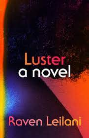

Welcome to Arunima's Book Nook!

Explore my favorite books and my tips for getting into reading, finding good books,
and exploring the vast and diverse landscape that is literature! We'll talk about
books I'm currently reading, books I want to read. Checkout favorites and tips
for more.

My Latest Reads

I'm currently reading Luster by Raven Leilani, which follows a Black woman in
her twenties who gets involved with a fortysomething white man in an open marriage.
So far, I've really been enjoying the way Leilani explores her main character's
identity as a somewhat lost Black woman and how that impacts her relationship
with society and of course with specific individuals.
